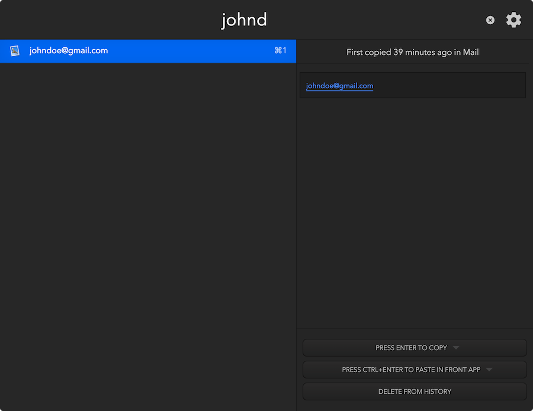
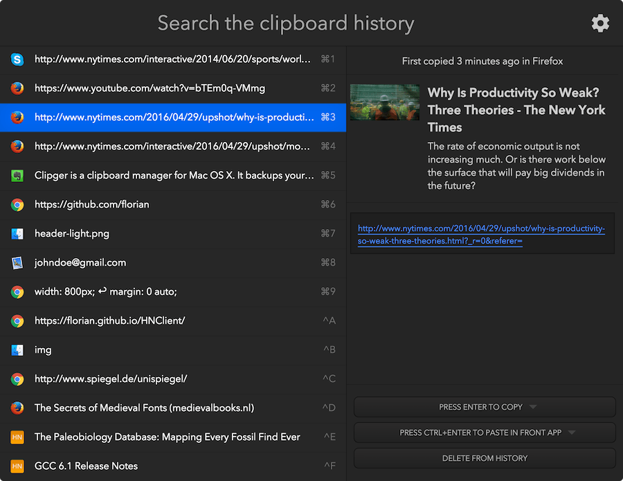
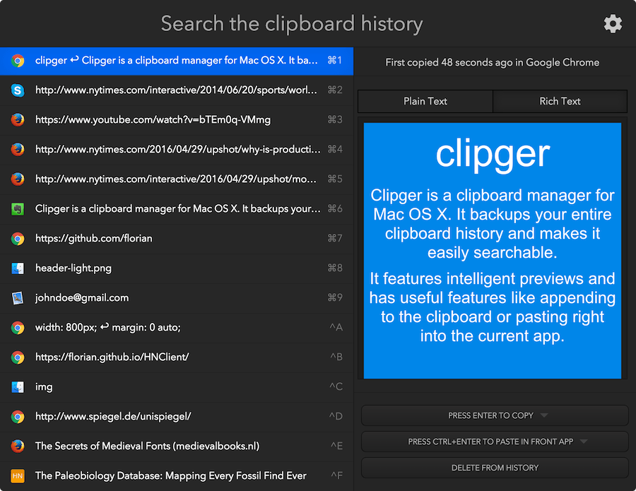

-

Never lose what you once copied
Clipger solves several problems related to the clipboard: One of them is that you sometimes copy something that you look for again a few days later. With clipger you can just search for these things in the clipboard history and easily find them.
Just press ctrl + space and clipger will open in a Spotlight like floating window and let you search through your clipboard history.
Smart previews
Clipger will intelligently show you previews for things like YouTube links. Want to quickly find a video URL you recently copied? No problem.
There are previews for image links, YouTube, Imgur, Giphy, 9gag and generic previews for all other websites.
Privacy options
Privacy options were a central design aspect of clipger from the very beginning. By default clipger won't save any information that was marked as confidential by another application, password managers like 1Password usually do this.
There's also a private mode where clipger won't record anything. It can also be enabled for only the next minute using the keyboard shortcut ctrl + g.
Other than that you can blacklist applications that clipger should ignore, can easily batch delete old history or specific history entries and can configure for how long clipger should save history in general.
Powerful clipboard manipulation
Clipger has a lot of helper functionality to let you be more productive when using the clipboard. You can append to the current clipboard entry using the shortcut alt + c.
There are also cmd + b and cmd + g to paste the next or previous history entry. You can use these to cycle through your clipboard history.
When wanting to copy or paste in clipger's GUI you can apply filters on history entries. For example to remove trailing whitespace or capitalize all words.
Support for rich text formatting
Clipger is smart enough to detect if the copied text had rich formating. In these cases clipger will offer you a plain text and a rich text preview.
You can also choose to copy or paste either the plain or the rich text version. By default clipger will always preserve the original formating.
Overview over all features
-
Advanced search
Clipger let's you do fuzzy searching, i.e. it doesn't expect the words in your search query to be in the right order. However there's also an advanced search mode that allows you to filter by app and time frame
-
Unlimited history
Unlike other apps clipger let's you save history for however long you want and as many history entries as you want. By default this means that you're history size is unlimited. There are also options to set limits
-
Have common information quickly accessible
It's pretty annoying to type out common information like your e-mail adress. With clipger you can just search for the first few characters and then let clipger paste it into the front app
-
Append to the clipboard
Clipger gives you the keyboard shortcut alt + c to directly append the selected text to the clipboard. You can even configure with what characters to combine the current clipboard entry and the appended text
-
Manipulate the clipboard entry
You can apply several filters before clipger will copy or paste the selected history entry. For example you can let clipger trim whitespace or make it capitalize parts of the text
-
Private mode
Want Clipger to temporarely stop saving your clipboard history? There's a private mode for just that. Press ctrl + g to enable it just for the next 60 seconds
-
Ignores passwords
By default Clipger will ignore all clipboard entries that were marked as confidential by another application. E.g. everything that 1Password writes into the clipboard won't be saved by clipger
-
Paste into Front app
When in clipger's main window you can press ctrl + enter to paste the selected history entry right into the front app. Press only enter and clipger will just copy to the clipboard
-
Preserves text type
Clipger has no problems dealing with different types of text, like e.g. text with formating. If you let clipger paste an old history entry it will preverse the text type by default
-
Configurable keyboard shortcuts
Cliper offers a bunch of global keyboard shortcuts but you can configure all of them however you'd like
-
Paste next/prev functionality
Inspired by Vim's YankRing plugin clipger offers global keyboard shortcuts to paste the next or previous item from your clipboard history. Want to paste something you copied a while ago? Just press the "next" keyboard shortcut several times
-
Dark and light modes
Clipger has a dark and a light mode, just like OS X. You can also choose to always use the same mode as OS X itself
Liked what you saw?

{kind=link}
{kind=link}
{kind=link}
{kind=link}
{kind=link}
{kind=link}
{kind=link}
{kind=link}
{kind=link}
{kind=link}
{kind=link}
{kind=link}
{kind=link}
{kind=link}
{kind=link}